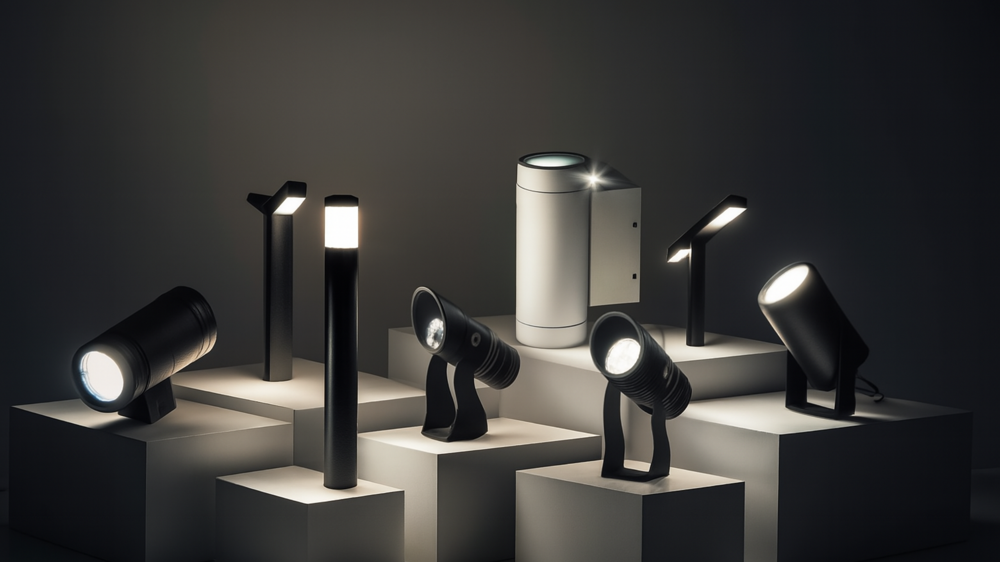

Detects road accidents and stopped vehicles in real time using AI-based video analytics. Auto-triggers SOS alerts, activates nearby smart poles, and shares geo-coordinates with ICCC for rapid emergency response.
Uses AI radar for lane-wise overspeeding capture. Integrates with ANPR for identification and generates automated e-Challan with video proof, improving road safety and driver discipline.
Measures vehicle speed with ±2% accuracy using dual radar validation. Displays overspeed alerts on digital signboards and syncs live data with ICCC dashboard.